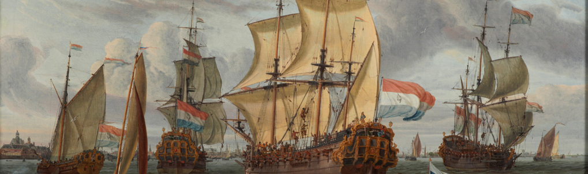

De collectie van Het Scheepvaartmuseum is één van de grootste en meest vooraanstaande maritieme collecties ter wereld, waaronder schilderijen, scheepsmodellen, navigatie-instrumenten en wereldkaarten. Ontdek 500 jaar Nederlandse maritieme geschiedenis en ervaar hoe sterk deze verbonden is met de samenleving van vandaag en van de toekomst.
.jpg)
tickets

geschiedenis

events

openingtijden
maandag Gesloten
dinsdag 10:00–17:00
woensdag 10:00–17:00
donderdag 10:00–17:00
vrijdag 10:00–17:00
zaterdag 10:00–17:00
zondag 10:00–17:00
revieuw
Als je tijd over hebt is dit een leuk museum om te bezoeken.
Het laat zien hoe het vroeger is gegaan op de grote vaart.
Zeker de replica die buiten ligt en de koninklijke sloep zijn de moeite waard om te bezoeken.
Verder veel schilderijen en andere prachtige instrumenten die met scheepvaart te maken heeft.
Het heeft ons verrast.
openingtijden
maandag Gesloten
dinsdag 10:00–17:00
woensdag 10:00–17:00
donderdag 10:00–17:00
vrijdag 10:00–17:00
zaterdag 10:00–17:00
zondag 10:00–17:00
revieuw
Als je tijd over hebt is dit een leuk museum om te bezoeken.
Het laat zien hoe het vroeger is gegaan op de grote vaart.
Zeker de replica die buiten ligt en de koninklijke sloep zijn de moeite waard om te bezoeken.
Verder veel schilderijen en andere prachtige instrumenten die met scheepvaart te maken heeft.
Het heeft ons verrast.